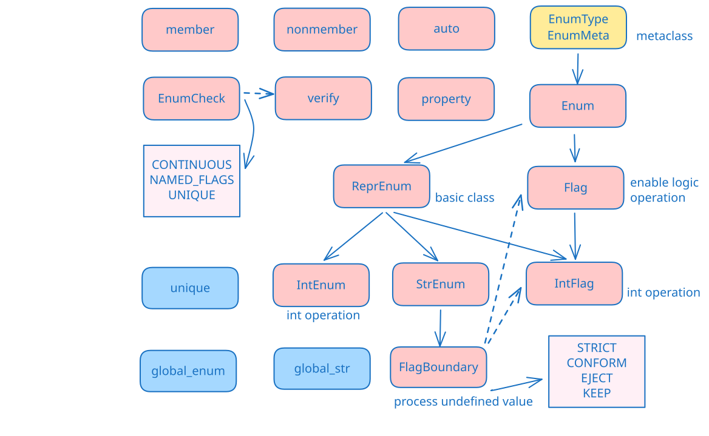

官方api文档： https://docs.python.org/3/library/enum.html 官网教程： https://docs.python.org/3/howto/enum.html 网友教程： https://blog.csdn.net/tekin_cn/article/details/145955099 香港博主教程： https://learnscript.net/zh/python/enumerations/
定义
from enum import Enum
class Color(Enum):
RED = 1
GREEN = 2
BLUE = 3
class Weekday(Enum):
MONDAY = 1
TUESDAY = 2
WEDNESDAY = 3
THURSDAY = 4
FRIDAY = 5
SATURDAY = 6
SUNDAY = 7
访问
print(Color(1)) # Color.RED
print(Color.RED) # Color.RED
print(Color["RED"]) # Color.RED
print(Color.RED.name) # 'RED'
print(Color.RED.value) # 1
print(type(Weekday.MONDAY)) # <enum 'Weekday'>
print(isinstance(Weekday.FRIDAY, Weekday)) # True
@unique没有 @unique: 默认每个 name 对应的 value 可以是一样的
class Direction(Enum):
UP = 1
DOWN = 2
LEFT = 3
RIGHT = 4
Front = 1
Back = 2
print(Direction.UP == Direction.Front) # True
有 @unique 修饰：每个 value 必须是独一无二的
from enum import unique
@unique
class Direction(Enum):
UP = 1
DOWN = 2
LEFT = 3
RIGHT = 4
# Front = 1 # <-- can't do this!
# Back = 2
auto()使用auto得到默认递增的 value
from enum import auto
class Color(Enum):
RED = auto()
GREEN = auto()
BLUE = auto()
for member in Color:
print(member.value) # 1 2 3
可以通过_generate_next_value_()改变 value 赋值方式
class ChineseHour(Enum):
def _generate_next_value_(name, start, count, last_values):
hour = (count - 1) * 2 - 1
return (hour % 24, (hour + 2) % 24 or 24)
子时 = auto()
丑时 = auto()
寅时 = auto()
卯时 = auto()
辰时 = auto()
巳时 = auto()
午时 = auto()
未时 = auto()
申时 = auto()
酉时 = auto()
戌时 = auto()
亥时 = auto()
@property
def start_hour(self):
assert isinstance(self.value, tuple), "Value must be a tuple"
return self.value[0]
@property
def end_hour(self):
assert isinstance(self.value, tuple), "Value must be a tuple"
return self.value[1]
def contains(self, hour):
assert isinstance(self.value, tuple), "Value must be a tuple"
start, end = self.value
if start < end:
return start <= hour < end
return hour >= start or hour < end
for hour in ChineseHour:
print(f"{hour.name}: {hour.start_hour}:00-{hour.end_hour}:00")
# 丑时: 23:00-1:00
# 寅时: 1:00-3:00
# 卯时: 3:00-5:00
# 辰时: 5:00-7:00
# 巳时: 7:00-9:00
# 午时: 9:00-11:00
# 未时: 11:00-13:00
# 申时: 13:00-15:00
# 酉时: 15:00-17:00
# 戌时: 17:00-19:00
# 亥时: 19:00-21:00
默认不会提供别名的项，所以下面没有Alias这个name
class ColorWithAliases(Enum):
RED = 1
GREEN = 2
BLUE = 3
ALIAS = 1
print(list(ColorWithAliases))
# [<ColorWithAliases.RED: 1>, <ColorWithAliases.GREEN: 2>, <ColorWithAliases.BLUE: 3>]
使用 __members__ 同时得到 name 和 value，这种方式可以访问别名成员
for key, value in ColorWithAliases.__members__.items():
print(key, value)
# RED ColorWithAliases.RED
# GREEN ColorWithAliases.GREEN
# BLUE ColorWithAliases.BLUE
# ALIAS ColorWithAliases.RED
使用 is 或 is not
print(Color.RED is Color.GREEN) # True
使用 == 或 !=
print(Color.RED == Color.RED) # True
不可以将 enum 和 value 比较
print(Color.RED is == 1) # TypeError ❌
不可以使用 > or <
print(Color.RED is < Color.GREEN) # TypeError ❌
only if parent enum class has no enum items, it can has a child class
class BaseColor(Enum):
def __str__(self):
return f"{self.name}: {self.value}"
class Color(BaseColor):
RED = 1
GREEN = 2
BLUE = 3
YELLOW = 4
print(Color.YELLOW) # YELLOW: 4
class MoreColor(Color): # You can't do this!
...
假设我们正在开发一个游戏，需要定义不同的角色类型（Enum），每个角色类型有特定的属性（通过 dataclass 定义）
from dataclasses import dataclass
from enum import Enum
@dataclass
class RoleAttributes:
health: int # 生命值
attack: int # 攻击力
speed: float # 移动速度
description: str = "" # 可选描述
class CharacterType(RoleAttributes, Enum):
# 格式: 枚举成员 = (health, attack, speed, description)
WARRIOR = 100, 15, 1.2, "近战战士，高攻击"
ARCHER = 70, 20, 1.5, "远程射手，高爆发"
MAGE = 60, 25, 1.0, "法术法师，群体伤害"
# 获取枚举成员及其属性
archer = CharacterType.ARCHER
print(archer) # 输出: CharacterType.ARCHER
print(archer.health) # 输出: 70
print(archer.description) # 输出: "远程射手，高爆发"
# 类型安全的比较
if archer == CharacterType.ARCHER:
print("这是射手角色") # 会执行
dataclasses 和enum的__repr__会冲突，所以不可以直接对继承了enum的类使用dataclass
@dataclass # ❌ 不要这样做！
class BadCharacter(Enum):
WARRIOR = 100, 10
ARCHER = 70, 15
# 问题1: 成员比较错误
print(BadCharacter.WARRIOR == BadCharacter.ARCHER) # 输出: True（应为 False）
# 问题2: 无法直接访问字段
print(BadCharacter.WARRIOR.health) # 报错！没有 health 属性
枚举可以被序列化和反序列化
from pickle import dumps, loads
class Fruit(Enum):
apple = 1
banana = 2
cherry = 3
print(loads(dumps(Fruit.apple)))
# Fruit.apple
import json
from json import JSONEncoder
from enum import Enum
class Fruit(Enum):
apple = 1
banana = 2
cherry = 3
# 序列化
class EnumEncoder(JSONEncoder):
def default(self, obj):
if isinstance(obj, Enum):
return {
"__enum__": True,
"type": type(obj).__name__,
"value": obj.value
}
return super().default(obj)
json_str = json.dumps(Fruit.apple, cls=EnumEncoder)
print(json_str) # 输出: {"__enum__": true, "type": "Fruit", "value": 1}
# 反序列化
def enum_hook(d):
if d.get("__enum__"):
return globals()[d["type"]](d["value"])
return d
restored_fruit = json.loads(json_str, object_hook=enum_hook)
print(restored_fruit) # 输出: Fruit.apple

ReprEnum 是 StrEnum 和 IntEnum 的基类。他主要是为了说明它的子类需要手动重写__repr__函数。
from enum import ReprEnum
class Status(ReprEnum): #❌ 不可以这样！
ACTIVE = 1
INACTIVE = 0
def __repr__(self):
return f"<Status: {self.name}={self.value}>"
# TypeError: ReprEnum subclasses must be mixed with a data type (i.e. int, str, float, etc.)
由此可见，我们需要指定value的数据类型。
from enum import ReprEnum
from dataclasses import dataclass
@dataclass
class RGB:
r: int
g: int
b: int
class Color(RGB, ReprEnum): # ❌ 不可以，只允许枚举同时继承一个非枚举类型（如int）和Enum/ReprEnum
RED = RGB(255, 0, 0)
GREEN = RGB(0, 255, 0)
BLUE = RGB(0, 0, 255)
def __repr__(self):
return f"<Color: {self.name}={self.value}>"
print(Color.RED)
我们只能修改成如下内容，这也就是和上边的IntEnum一样了
from enum import ReprEnum
class Color(int, ReprEnum):
RED = 1
GREEN = 2
BLUE = 3
def __repr__(self):
return f"<Color: {self.name}={self.value}>"
print(Color.RED) # 1
IntEnum的源码如下
class IntEnum(int, ReprEnum):
"""
Enum where members are also (and must be) ints
"""
当我们需要知道每一个name对应的整数，甚至需要运算的时候，就要用到IntEnum
from enum import IntEnum
class HTTPStatus(IntEnum):
CONTINUE = 100
OK = 200
CREATED = 201
BAD_REQUEST = 400
UNAUTHORIZED = 401
FORBIDDEN = 403
NOT_FOUND = 404
INTERNAL_SERVER_ERROR = 500
# 可以直接与整数比较
response = 404
if response == HTTPStatus.NOT_FOUND:
print("Page not found")
# 也可以作为整数使用，但整数运算后，结果不再是枚举类型
print(HTTPStatus.OK + 100) # 300
StrEnum 与 IntEnum 类似，但是多了一些内容。StrEnum 默认提供了 _generate_next_value_ 函数，默认value是name的小写。
# 源码
class StrEnum(str, Enum):
// ...
@staticmethod
def _generate_next_value_(name, start, count, last_values):
"""
Return the lower-cased version of the member name.
"""
return name.lower()
from enum import Enum, auto
from typing import Union
# 定义枚举（兼容 Python 3.4+）
class Color(str, Enum):
RED = "red"
GREEN = "green"
BLUE = "blue"
# 需要Python3.11
class Color(StrEnum):
RED = "red"
GREEN = "green"
BLUE = "blue"
# 默认value就是name的小写
class Color(StrEnum):
RED = auto()
GREEN = auto()
BLUE = auto()
# 检查是否是合法的颜色
def print_color(color: Union[Color, str]):
if isinstance(color, Color):
print(f"Enum color: {color.value}")
elif color in [c.value for c in Color]:
color_enum = Color(color)
print(f"String color (converted to enum): {color_enum.value}")
else:
raise ValueError(f"Invalid color: {color}")
print_color(Color.RED) # 输出: Enum color: red
print_color("green") # 输出: String color (converted to enum): green
print_color("yellow") # 报错: ValueError: Invalid color: yellow
另外，StrEnum保证了每一个value都是str。并且还可以根据多个参数指定更多内容。
# 源码
class StrEnum(str, ReprEnum):
def __new__(cls, *values):
"values must already be of type `str`"
if len(values) > 3:
raise TypeError('too many arguments for str(): %r' % (values, ))
if len(values) == 1:
# it must be a string
if not isinstance(values[0], str):
raise TypeError('%r is not a string' % (values[0], ))
if len(values) >= 2:
# check that encoding argument is a string
if not isinstance(values[1], str):
raise TypeError('encoding must be a string, not %r' % (values[1], ))
if len(values) == 3:
# check that errors argument is a string
if not isinstance(values[2], str):
raise TypeError('errors must be a string, not %r' % (values[2]))
value = str(*values)
member = str.__new__(cls, value)
member._value_ = value
return member
class MyStrEnum(StrEnum):
# 使用单个参数（字符串值）
HELLO = "你好"
# 使用两个参数（字符串值和编码）
WORLD = ("世界".encode("utf-8"), "utf-8")
# 使用三个参数（字符串值、编码和错误处理）
# 忽略无法解码的字节
PYTHON = ("蟒蛇".encode("utf-8"), "ascii", "ignore")
# 用替换字符(通常是?)代替无法解码的字节
JAVA = ("咖啡".encode("utf-8"), "ascii", "replace")
# 默认模式，遇到无法解码的字节直接抛出异常
# RUST = ("齿轮".encode("utf-8"), "ascii", "strict")
print(MyStrEnum.HELLO) # 输出：你好
print(MyStrEnum.WORLD) # 输出：世界
print(MyStrEnum.PYTHON) # 不输出
print(MyStrEnum.JAVA) # 输出：������
from enum import Flag, auto, STRICT, CONFORM, EJECT, KEEP
class StrictFlag(Flag, boundary=STRICT):
A = 1
B = 2
# print(StrictFlag.A | StrictFlag(4))
# ValueError: <flag 'StrictFlag'> invalid value 4
class ConformFlag(Flag, boundary=CONFORM):
A = 1
B = 2
print(ConformFlag.A | ConformFlag(4)) # 输出 A (只保留有效的1，丢弃4)
class EjectFlag(Flag, boundary=EJECT):
A = 1
B = 2
print(EjectFlag(4)) # 输出 4 (整数)
# print(EjectFlag.A | EjectFlag(4))
# TypeError: unsupported operand type(s) for |: 'EjectFlag' and 'int'
class KeepFlag(Flag, boundary=KEEP):
A = 1
B = 2
print(KeepFlag.A | KeepFlag(5)) # 输出 A|4 (保留所有位)
Flag 是 Enum 的一个特殊子类，专门用于处理 位掩码（bitmask） 或 组合标志（combinable flags） 的场景。
| 特性 | Enum |
Flag |
|
|---|---|---|---|
| 用途 | 表示互斥的、独立的枚举值 | 表示可以组合的标志（bitmask） | |
| 是否可组合 | ❌ 不能组合（每个值独立） | ✅ 可以用 |、&、~ 等位运算组合 |
|
| 比较方式 | 只能 == 或 is 比较 |
可以检查是否包含某个标志（&） |
|
| 典型用例 | 状态机（如 Color.RED）、分类 |
权限控制、选项组合（如文件打开模式） |
Enum 无法处理组合情况，每个成员是互斥的，不能组合。例如：
from enum import Enum
class Color(Enum):
RED = 1
GREEN = 2
BLUE = 4
# ❌ 不能组合
mixed = Color.RED | Color.GREEN # 报错！
Flag 允许位运算组合：允许用 |（OR）、&（AND）、~（NOT）等操作组合多个标志
from enum import Flag, auto
class Permissions(Flag):
READ = auto() # 1
WRITE = auto() # 2
EXECUTE = auto() # 4
# ✅ 可以组合
user_perms = Permissions.READ | Permissions.WRITE # READ + WRITE (3)
admin_perms = Permissions.READ | Permissions.WRITE | Permissions.EXECUTE # 7
# 检查是否包含某个权限
print(Permissions.READ in user_perms) # True
print(user_perms & Permissions.WRITE) # Permissions.WRITE
再如，网络协议标志（如 TCP 标志位）
class TCPFlags(Flag):
FIN = 0x01
SYN = 0x02
RST = 0x04
PSH = 0x08
ACK = 0x10
URG = 0x20
packet_flags = TCPFlags.SYN | TCPFlags.ACK # SYN-ACK 包
需要进一步和int进行运算
class Permissions(IntFlag):
READ = 1
WRITE = 2
EXECUTE = 4
# 可以直接进行位运算
perms = Permissions.READ | Permissions.WRITE
print(perms) # Permissions.READ|WRITE
print(perms & 3) # 3 (可以直接和整数运算)
# 源码
class nonmember(object):
"""
Protects item from becoming an Enum member during class creation.
"""
def __init__(self, value):
self.value = value
class member(object):
"""
Forces item to become an Enum member during class creation.
"""
def __init__(self, value):
self.value = value
member 和 nonmember 可以把一个不能用来当成value的内容强行包装成value
| 特性 | @member |
@nonmember |
|---|---|---|
| 用途 | 显式标记一个成员为枚举成员 | 显式标记一个成员不作为枚举成员 |
是否出现在 __members__ |
✅ 是 | ❌ 否 |
| 是否可迭代 | ✅ 是（for item in Enum 可访问） |
❌ 否（迭代时不会出现） |
| 典型场景 | 强制将方法/属性视为枚举成员 | 临时变量、辅助方法等不希望暴露的成员 |
from enum import Enum, nonmember, member
class Outer(Enum):
a = 1
b = 2
@nonmember
class Inner1(Enum):
foo = 10
bar = 11
@member
class Inner2(Enum): # Inner 本身成为 Outer 的成员
foo = 10
bar = 11
# 访问枚举成员
print(Outer.Inner1.foo) # 输出: Outer.Inner.foo
print(Outer.Inner2.value.foo) # 输出: Outer.Inner.foo
# 遍历枚举成员
print(list(Outer)) # [<Outer.a: 1>, <Outer.b: 2>, <Outer.Inner2: <enum 'Inner2'>>]
允许 Enum 成员具有属性，而不会与成员名称冲突。 value 和 name 属性就是这样实现的。
枚举属性通过 @property 定义后：
class Status(Enum):
PENDING = 1
PROCESSING = 2
COMPLETED = 3
@property
def is_finished(self):
return self == Status.COMPLETED
# 使用示例
print(Status.PENDING.is_finished) # False
print(Status.COMPLETED.is_finished) # True
class Color(Enum):
RED = (255, 0, 0)
GREEN = (0, 255, 0)
BLUE = (0, 0, 255)
def __init__(self, r, g, b):
self.rgb = (r, g, b)
@property
def hex_code(self):
return f'#{self.rgb[0]:02x}{self.rgb[1]:02x}{self.rgb[2]:02x}'
# 使用示例
print(Color.RED.hex_code) # 输出: #ff0000
verify是枚举类装饰器，用于检查用户选择的枚举约束。
EnumCheck枚举包含：CONTINUOUS、NAMED_FLAGS、UNIQUE三个元素
CONTINUOUS - 验证枚举值是否是连续的整数
from enum import Enum, verify, CONTINUOUS
@verify(CONTINUOUS)
class Status(Enum):
PENDING = 1
PROCESSING = 2 # 正常，因为1,2,3是连续的
COMPLETED = 3
# SKIPPED = 5 # 会报错，因为跳过了4
NAMED_FLAGS - 验证标志枚举(Flag)的值是否是2的幂次方
@verify(NAMED_FLAGS)
class Permissions(Flag):
READ = 1 # 2^0
WRITE = 2 # 2^1
EXECUTE = 4 # 2^2
# INVALID = 3 # 会报错，因为3不是2的幂次方
UNIQUE - 验证value是独一无二的，单独使用时，和@unique没区别
@verify(UNIQUE)
class Color(Enum):
RED = 1
GREEN = 2
BLUE = 3 # 这会正常通过验证
# RED = 4 # 这会引发 ValueError，因为 RED 已经存在
这三个可以混合使用
@verify(UNIQUE, CONTINUOUS) # 同时验证唯一性和连续性
class Status(Enum):
PENDING = 1
PROCESSING = 2
COMPLETED = 3
global_enum 用于将枚举成员注册为全局变量。它的主要作用是将枚举类的所有成员自动注入到模块的全局命名空间中，这样可以直接通过成员名访问枚举值，而不需要通过枚举类名。
from enum import Enum, global_enum
@global_enum
class Color(Enum):
RED = 1
GREEN = 2
BLUE = 3
# 现在可以直接使用 RED, GREEN, BLUE 而不需要 Color.RED
print(RED) # 输出: Color.RED
使用 enum_name 代替 class.enum_name，它是一个函数，不是装饰器
class Direction(Enum):
UP = 1
DOWN = 2
LEFT = 3
RIGHT = 4
print(Direction.UP) # Direction.UP
print(Direction.UP.name) # UP
print(global_str(Direction.UP)) # UP